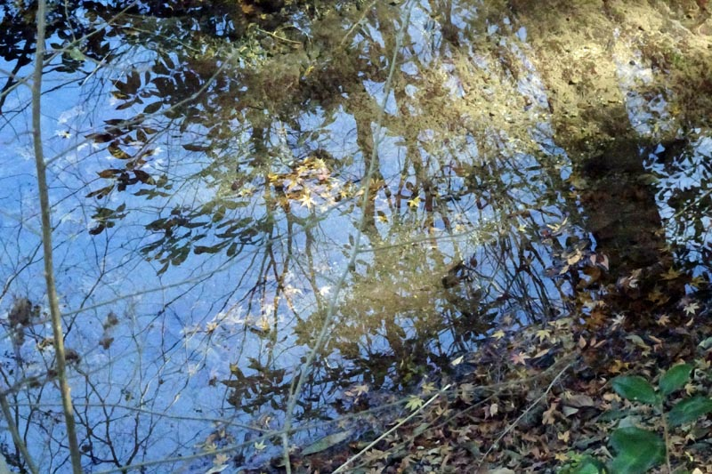

フリスキン: 幻想ピアノ五重奏曲
前回の話に出た1907年のピアノ三重奏によるPhantasyコンペティションにおいて、ブリッジとアイアランドにはさまれ第2位だったのは、聞いたことのない名前の作曲家ジェームズ・フリスキンであった。スコットランド出身で、1886年生まれなのでアイアランドよりは少し下、バックスあたりと同年代になる。だが、そのピアノ三重奏のためのPhantasyの録音は配信には見つからず、唯一引っ掛かったアルバムが下の『ピアノ五重奏のためのPhantasy』を含む室内楽曲集である。"Phantasy"をタイトルにしていることからわかる通り、コベットの委嘱による1910年の作品とのこと。他にも1905年の第1回コンペティション受賞作である『弦楽四重奏曲のためのPhantasy』も聴くことができる。
James Friskin: Phantasy for Piano Quintet
Catherine Dubois (pf)
The Rasumovsky Quartet
(2009)
フリスキンは1914年にアメリカに移住し、それ以降目立った作曲活動をしなかったとされている。ここにあるのはすべてそれ以前の若い頃の作品である。『ピアノ五重奏のためのPhantasy』は、一部不自然さはあるものの、抒情的な美しさ（特に中間部）が際立つロマンティックな作品だと思う。20分近くの長さで、Phantasyとしては長めだが、五人それぞれの良さを引き出すためにはこれくらいの長さは必要なのだろう。裏を返せば多彩なソロの活躍が楽しめるということでもある。その前に入っているヴィオラとピアノのための『エレジー』も分かりやすく甘い作品だ。一説によると後年アメリカで結婚した相手のレベッカ・クラーク（このブログでも『ピアノ三重奏曲』を以前取り上げた）を想って書かれたとされている。二人は同年生まれで、同時期に王立音楽大学にてスタンフォードに作曲を学んでいた。
このアルバムの演奏はまず録音がオンマイクに過ぎるせいか固い感じで、弦もうわずって聴こえる部分が多く今一つであるが、おそらくは他に録音が存在しない以上貴重である。Phantasyとは別の作品1番の『ピアノ五重奏曲 ハ短調』はそれほどの作品とは思わないが、それ以外の曲、中でもこの『Phantasyピアノ五重奏曲』は他の演奏で聴いてみたいところである。
配信でフリスキンのタグが付いたアルバムがもう一つだけあった。作曲家としてではなく、ピアニストとしてのもので、バッハの作品集である。『ゴルトベルク変奏曲』『半音階的幻想曲とフーガ』『イタリア協奏曲』『インヴェンションとシンフォニア』『フランス組曲（抜粋）』が収録されている。特に『ゴルトベルク』はあのグールドとほぼ同じ頃の録音になる。グールドのように一聴して衝撃を受ける類のものではなく、楷書的な演奏で、フリスキンの性格はこれだけを聴いても何となく伝わってくる。70歳頃の録音だが、硬直とか枯れといった言葉とは無縁の、しなやかでよく歌う演奏である。
J. S. Bach: Goldberg Variations
James Friskin (pf)
(1956)

(Jan. 13, 2024)